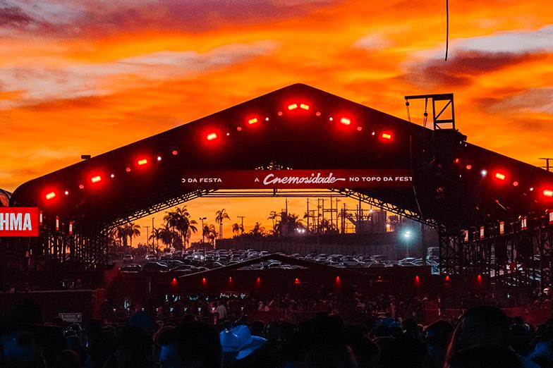
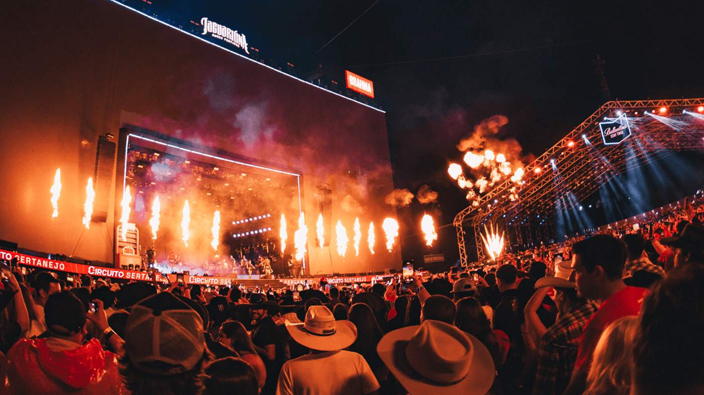

Campo do Padre
Começa pequeno: rodeio de bairro, artistas locais e cerca de 18 mil pessoas. No ano seguinte, já eram 30 mil.
O passado deixa pistas do próximo lineup?
Todo ano rola a mesma pergunta antes do anúncio: quem vai subir no palco de Jaguariúna? Fui atrás de 37 edições do festival, montei a base e caçei os padrões — e o que apareceu é mais curioso do que parece. Vem comigo: primeiro a história, depois os achados e, no fim, uma projeção com todas as contas à mostra.
Em 1989, cerca de 18 mil pessoas foram a um rodeio de bairro num campo em Jaguariúna. Em 2005, o festival divulgou mais de 300 mil. No meio do caminho: três endereços, um festival de 10 dias, uma tragédia e uma pandemia. Antes de olhar qualquer artista, vale saber de onde a festa saiu — porque a história explica os números.
Começa pequeno: rodeio de bairro, artistas locais e cerca de 18 mil pessoas. No ano seguinte, já eram 30 mil.
A festa cresce e muda de casa (cerca de 45 mil pessoas em 1992). Em 1995 vira um festival de inverno de 10 dias.
Vira máquina de megashow — e, com o tempo, enxuga até as 4 noites de hoje.
Já foi festival de 10 dias. Já teve 9 noites, já teve 6.
Hoje são só 4 — e assim há mais de uma década.
Menos noites, menos espaço pra encaixar nomes: entender esse encolhimento é o primeiro passo pra entender quem consegue (ou não) subir no palco.
Cada barra é uma edição. As tracejadas são anos em que nenhuma fonte confirma a duração — preferi deixar em branco a chutar. Passe o mouse (ou toque) numa barra pra ver o contexto.
Todo mundo tem a mesma teoria: sábado é a noite dos maiores nomes. Fui testar — e o resultado tem uma reviravolta.
Quem manda no dia da semana não é o dia: é o artista.
Tem gente que praticamente mora na sexta e gente que só sobe no sábado.
Os 10 artistas com mais noites de sexta ou sábado (datas confirmadas, desde 2010). Sextas pra esquerda, sábados pra direita.
Quantos headliners, segundos nomes, crossovers e emergentes aparecem, em média, por noite desde 2015 (a era das 4 noites).
Existe um clube fechado no palco do Jaguariúna. Quem são os sócios — e por que o resto entra e some?
Os 12 artistas com mais aparições na história do festival. Clique num nome pra ver todas as noites dele.
Spoiler: mais ou menos metade. Cada barra mostra quantos artistas de uma edição estiveram também na do ano seguinte; a linha tracejada é a média.
Os 22 artistas com mais edições desde 2008. Cada linha é um artista, cada coluna uma edição; a cor mostra o dia em que ele tocou.
Repare nas faixas contínuas (quem nunca sai) e nos buracos (quem some e volta). 2020 não aparece porque não teve festival. Clique num nome pra abrir o dossiê.
O ranking não conta tudo. Olhando quem divide palco com quem, quais estilos crescem e quando chegam os novatos, aparecem padrões que ninguém escolheu de propósito — ou será que escolheu? Quatro achados, todos calculados na mesma base.
Os 12 mais presentes desde 2008, ligados por quantas edições passaram juntos: quanto mais grossa a linha, mais palco dividido. Passe o mouse (ou toque) num nome pra destacar só as ligações dele.
Quem já dividiu a mesma noite mais de uma vez em 37 anos. Tem par que se repete — e tem par que ninguém esperava.
Sem ninguém dizer quem é quem, um algoritmo agrupou os artistas por frequência × recência. Cada bolinha é um artista; clique pra abrir o dossiê.
Os 5 estilos mais frequentes em cada era. Repare no que nasce e no que perde espaço.
Quantos artistas subiram ali pela primeira vez, edição por edição, desde 2010.

Até aqui, eu só olhei pra trás. Agora vem a parte arriscada: usar esse retrato pra levantar hipóteses sobre 2027, 2028 e 2029 — com as contas de cada nome à vista.

Se o passado se repete, como seria o palco? Cruzei tudo o que vi — o formato fixo, o hábito de cada dia, quem volta e quem some — e montou uma projeção. Não é palpite nem anúncio: é a leitura estatística do histórico. E você pode clicar em qualquer nome pra ver por que ele está ali.
| Noite | Papel | Candidato | 3× no slot | 1× total | Recência | Score | Score rel. | Posição |
|---|
Agora a conversa acaba e você assume o controle. Procure seu artista favorito, filtre um ano, veja quem estreou em cada edição (selo NOVO) e baixe a base inteira. Clique num nome pra abrir o dossiê dele.
| Ano | Edição | Data | Dia | F.d.s. | Artistas | Sede |
|---|
Os bastidores: como a base foi montada, o que é dado e o que é interpretação minha, e onde ainda tem buraco. Pra quem quer confiar — ou desconfiar — com base.
Nem toda edição tem o mesmo nível de detalhe. Este mapa mostra o que existe de fato, ano a ano.